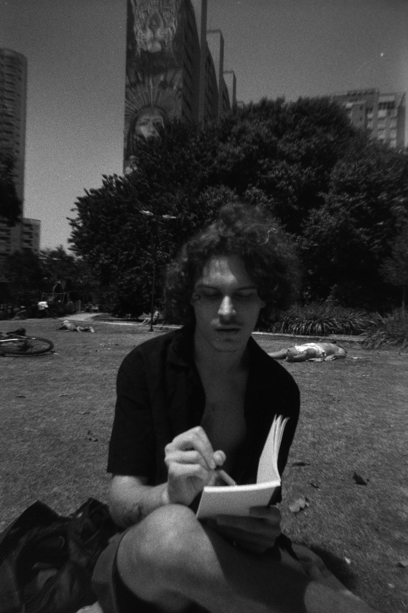
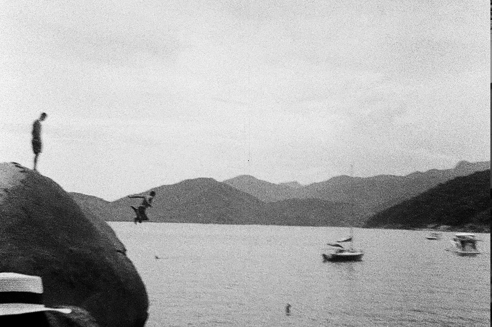

Victor Kutz, 23 anos, é graduando no último ano de jornalismo pela Faculdade Cásper Líbero. Trabalha desde 2023 na redação da Revista Cult, onde foi estagiário e hoje é repórter fixo. Cobre temas como cinema, literatura, teatro, artes visuais e políticas públicas para a área da cultura. Além disso, edita textos e produz peças de divulgação de eventos e conteúdos da revista e editora para o Instagram. Atua como curador de poesia da "Oficina Literária", seção mensal da revista impressa dedicada à publicação de textos autorais e inéditos dos leitores, e assina mensalmente, junto à jornalista Carolina Azevedo, a coluna "Estante", na mesma revista, onde resenha lançamentos do circuito literário.
Na graduação, desenvolve uma pesquisa sobre o compositor argentino Astor Piazzolla, sob a ótica da etnomusicologia, relacionando a obra do bandoneonista ao debate político, literário e cultural do país, principalmente com a obra crítica do escritor Jorge Luis Borges e de outros pensadores.
Como fotógrafo, desenvolve desde 2023 um portfólio autoral com processos analógicos em formato 35mm e 120. Suas fotografias já foram publicadas tanto no site como na edição impressa da Cult.
Também tem conhecimentos de HTML e Wordpress; Domínio avançado de inglês e francês (Aliança Francesa); bom nível de comunicação em espanhol, idioma no qual realiza sua pesquisa; tem experiência na organização de eventos da Revista Cult e em assessoria de imprensa, área na qual atuou no começo da graduação.
Atualmente está aberto a contribuições, freelas e novas experiências na área de cultura e jornalismo.



